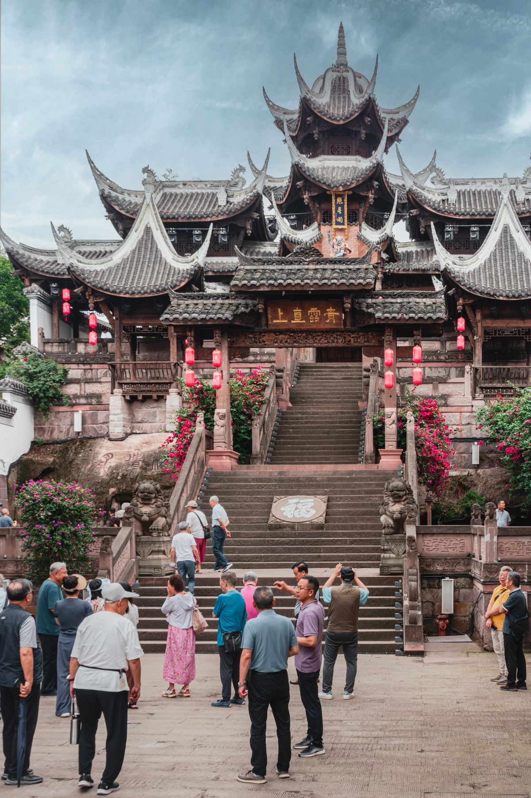
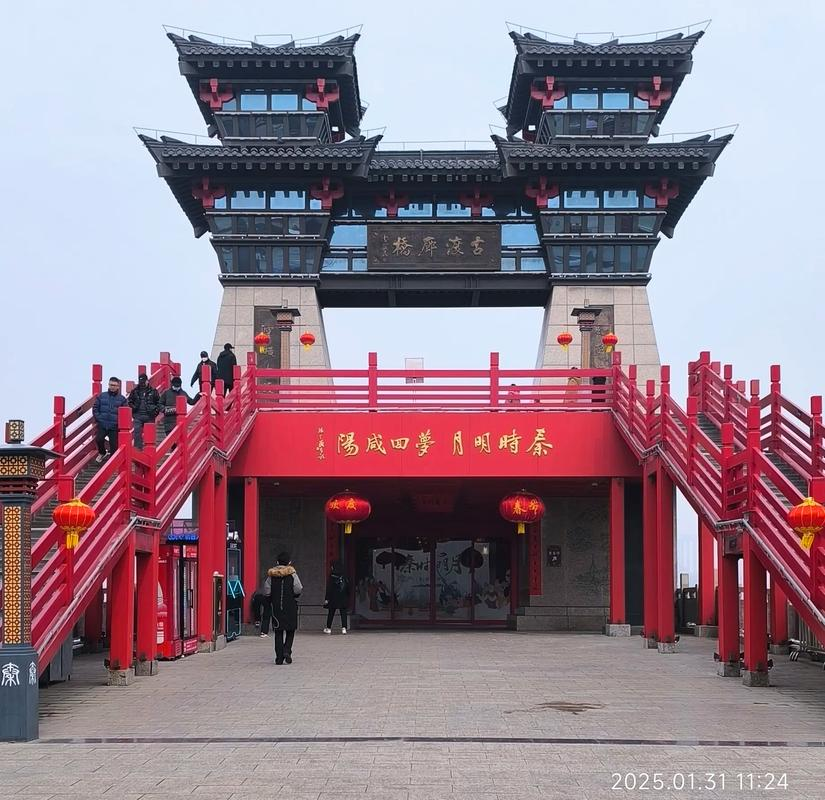
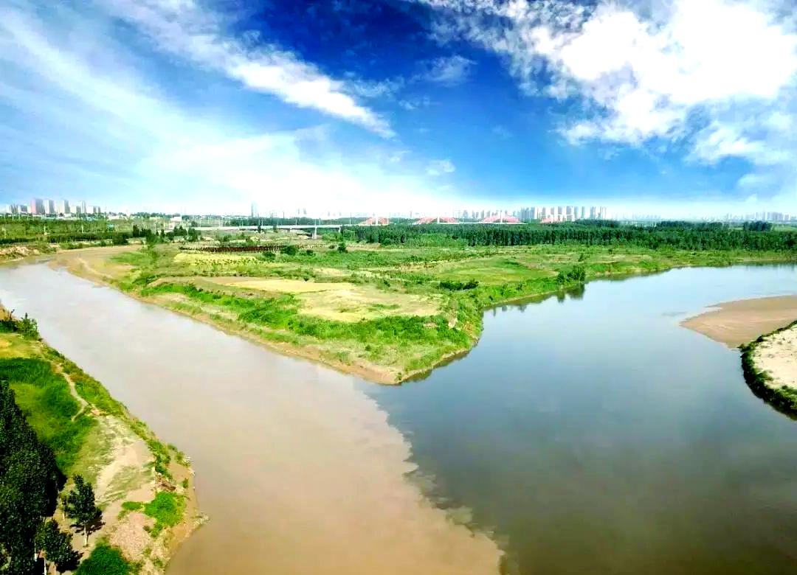
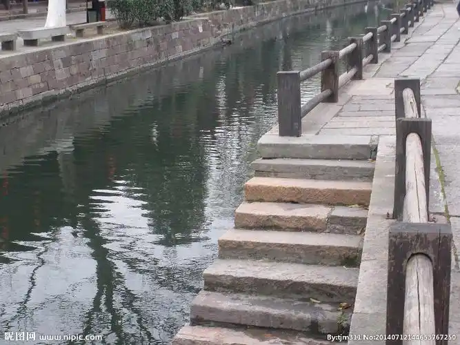

咸阳古渡位于渭河北岸的咸阳市区，是关中八景中唯一以"交通"为核心意象的景观。渭河是黄河最大的支流，横贯关中平原。在漫长的古代，渡过渭河是西出长安的第一道关口。秦汉时期，咸阳是秦朝国都，汉唐时虽政治中心移至渭河南岸的长安，但咸阳仍是通往西域的必经之地。无数商队、使节、僧侣、诗人从这里渡河北上或西去，"咸阳古渡"因此获得了"丝绸之路第一渡"的称号。
唐代诗人王维的名句"渭城朝雨浥轻尘，客舍青青柳色新。劝君更尽一杯酒，西出阳关无故人"中的"渭城"即是咸阳。送别的地点往往就在咸阳渡口——在此饮下最后一杯酒，朋友便要渡河北去，踏上漫漫西行之路。

咸阳古渡的历史至少可追溯至商周时期。秦代在此修建了横跨渭河的"渭桥"，汉代扩建为"便门桥"（即后世所称"咸阳桥"）。唐代时渭河上曾有三座大桥——东渭桥、中渭桥、西渭桥，是当时世界上规模最大的桥梁群。杜甫《兵车行》中"车辚辚，马萧萧，行人弓箭各在腰。爷娘妻子走相送，尘埃不见咸阳桥"描写的正是大军从咸阳桥出征的悲壮场面。
明清时期，随着渭河水量减少和桥梁损毁，咸阳渡口主要以舟船摆渡维系交通，直到20世纪现代桥梁的建成。如今，咸阳古渡遗址公园位于咸阳市渭城区，公园内保存着明清时期的渡口码头石阶和一段古纤道，供人凭吊这条千年交通大动脉的昔日繁华。
"渭城朝雨浥轻尘，客舍青青柳色新。劝君更尽一杯酒，西出阳关无故人。" —— 王维《送元二使安西》


| 地址 | 咸阳市渭城区渭阳东路（咸阳古渡遗址公园） |
|---|---|
| 开放时间 | 全天开放 |
| 门票 | 免费 |
| 交通 | 西安乘地铁 1 号线至沣河森林公园站，换乘公交至咸阳渭城区；或自驾沿西宝高速约40分钟 |
| 小贴士 | 古渡遗址公园较小，约30分钟可游完，建议与咸阳博物馆（文庙，免费）、周陵等咸阳景点串联游览 |